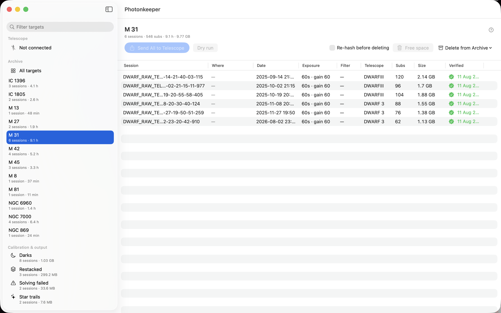
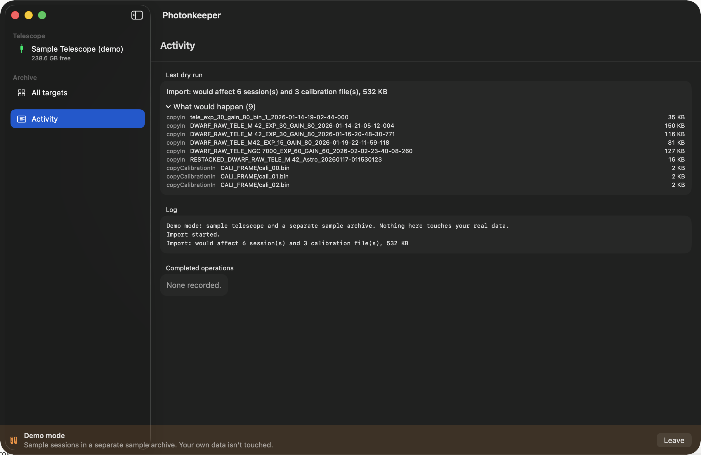
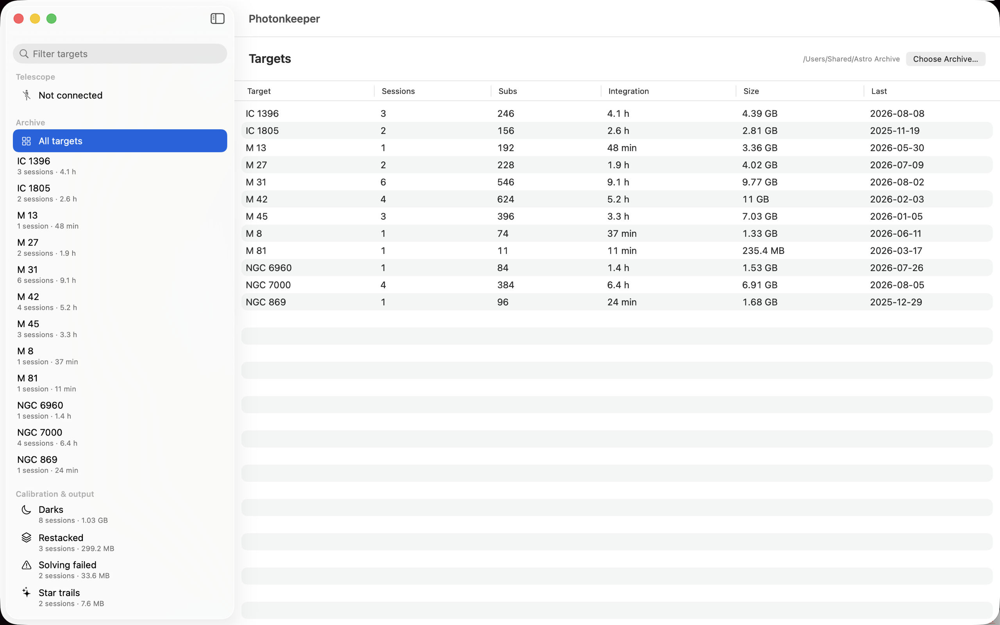

Gets imaging sessions off a DWARF 3 and into a proper archive on your own drive — and puts them back byte for byte identical, so the telescope can still megastack and restack them.
M 42, M42 and NGC 1976 as one target instead of three folders.Session folders are never renamed and nothing inside one is ever altered — all the organising happens in the directories above them.
There's a demo mode with sample data and a separate sample archive, so you can watch the whole round trip work before pointing it anywhere near your own sessions. Telescope → Try Demo Mode.



Unzip it and drag Photonkeeper to your Applications folder. The first time you open it macOS will ask:
Click Open. That's the normal prompt for any downloaded app — Photonkeeper is signed with an Apple Developer ID and notarised by Apple, so you get a single click rather than the block macOS shows for unsigned software.
For an app whose whole job is checksumming your data, here's a checksum of itself. Run this on the downloaded file:
cfc743443deb8802749e698f3afc36561db7c027e38c5102fac7828602c72792
Photonkeeper is built and tested against a DWARF 3. Whether it would work with a Mini comes down to a few things I can't answer without one in front of me: whether it mounts as a normal disk when you plug it in, whether its files sit in an Astronomy folder, and what its session folders are called.
If you have a Mini and five spare minutes, this would settle it. Connect the Mini over USB, open Terminal (Applications → Utilities), and paste this:
It is read-only. It lists what's mounted, looks for an Astronomy folder, prints the names of one session's files, and asks macOS what the device calls itself. It never opens, copies, moves, renames or deletes anything on the telescope. If you'd rather read it before running it — a sound instinct with any command a stranger gives you — this downloads it and opens it in TextEdit first:
Then run bash mini-check.sh once you're happy with it.
Copy everything it prints and send it to support@chryse.co.uk. A screenshot of the Terminal window works just as well. That output tells me whether Mini support is a small change or a different app.
Photonkeeper collects nothing about you. There is no analytics, no telemetry, no crash reporting, no account to make, no licence to check and no tracking of any kind. Nobody, me included, learns what you photograph or when.
The app makes exactly two kinds of network connection, and this is all of them:
version.json, a small file saying what the current release is, and compares it with itself. It sends nothing about you or your archive — the request discloses what every web request does, an IP address and the fact that a request happened. It downloads no code and installs nothing; if there's a newer version it shows a banner and you decide. Turn it off in Settings → check for updates and the app makes no outbound connections at all beyond your own telescope.Everything else stays on your Mac: the catalog of your archive, the per-session manifests and checksums, and a handful of small settings — where your archive is, which telescopes you've allowed, the last Wi-Fi address you used, your appearance choice and when the version check last ran. The Activity log lives in memory and is gone when you quit. None of it is sent anywhere.
The app is sandboxed by macOS. It can read and write the archive folder you pick and the telescope when it's connected, and nothing else on your disk.
If you email me, I have whatever you chose to put in the email, for as long as it takes to sort out — and no longer. Worth knowing: the Mini check above prints your macOS version and the USB serial number of the connected device, so read its output before you send it if that bothers you.
Bugs, confusion, feature requests, or a Mini report: support@chryse.co.uk. If something went wrong, the Activity pane inside the app has a log — a screenshot of that is the single most useful thing you can send.